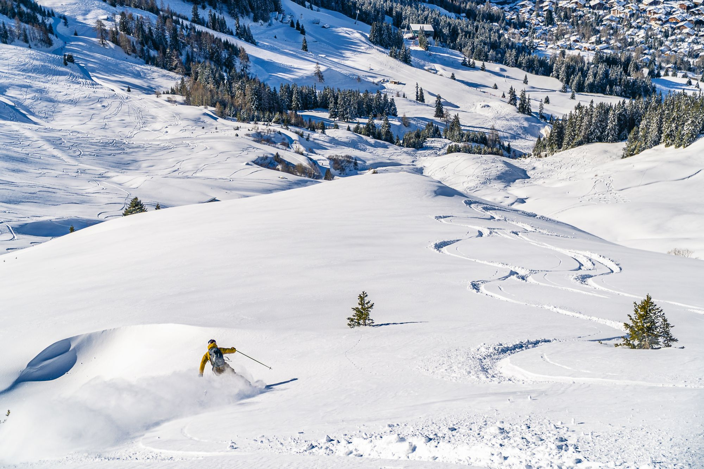
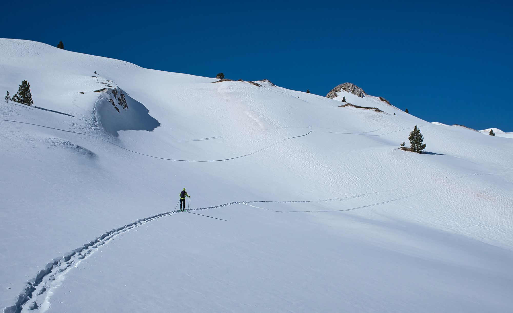

Bajar la pista por la mañana, volver a la estufa por la tarde.
Desde Llananzanes se sube en media hora al puerto de San Isidro, donde se tocan Fuentes de Invierno y San Isidro. Pistas para todos los niveles, escuelas de esquí y snowboard, alquiler de material y zonas pensadas para familias.
Tres estaciones.
Cordillera Cantábrica

01
Fuentes de Invierno
La más cercana, en el propio concejo de Aller. Manejable y tranquila: perfecta para familias y para quien empieza.
Datos orientativos: distancias y tiempos en coche desde Llananzanes (Aller), y kilómetros de pistas que cambian con la nieve de cada temporada. Antes de subir, mira el parte de la estación.

Sin esquís, también.
Rutas guiadas con raquetas por el entorno del puerto de San Isidro: bosques, lagos helados y cumbres de la cordillera, a tu ritmo. Te ayudamos a organizar la salida.